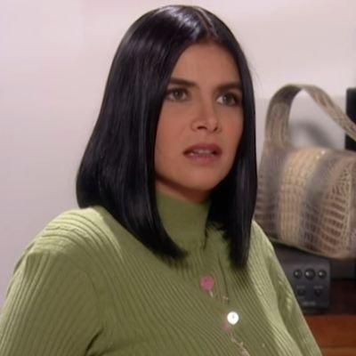

Personajes
Betty

Beatriz Aurora Pinzón Solano (Ana María Orozco), comúnmente conocida como "Betty", es una economista joven y brillante, aunque poco atractiva, que vive con sus padres en Bogotá. Luego de muchas dificultades para conseguir empleo, Betty comienza a trabajar como secretaria de presidencia en una empresa llamada Ecomoda.
Armando Mendoza
Armando Mendoza es el ex-presidente y actual vicepresidente de Ecomoda, hijo de los fundadores de la empresa, Roberto Mendoza y Margarita Sáenz y el esposo de Beatriz Pinzón. Junto con su mejor amigo Mario Calderón, crearon Inversiones Terramoda para salvar Ecomoda.
Marcela Valencia
Marcela Valencia es la ex prometida de Armando Mendoza, la segunda de los hermanos Valencia y la Gerente de los puntos de venta y accionista de Ecomoda. Es uno de los personajes antagónicos de la serie hasta cierto punto debido a sus choques personales con Betty.
Nicolás Mora
Nicolás Mora Cifuentes es el amigo de la infancia, vecino y compañero de universidad de Betty. Tras la fundación de Inversiones Terramoda, Nicolás es nombrado el gerente general de la empresa. Tras el nombramiento de Betty como presidente tanto de Ecomoda como de Terramoda, es nombrado vicepresidente financiero de Ecomoda, reemplazando al doctor Gustavo Olarte. Estuvo enamorado de Patricia Fernandez a lo largo de toda la serie original.